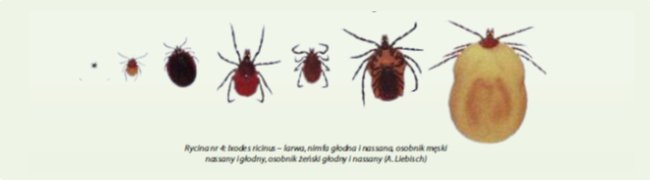
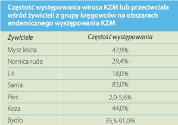

Profilaktyka
Sprawdź jak się chronić przed Kleszczowym Zapaleniem Mózgu i innymi chorobami odkleszczowymi.
Jak się zabezpieczyćWirus KZM
Kleszcze są głównymi nosicielami (wektorami) i rezerwuarem wirusa KZM w środowisku naturalnym. Brak enzymów trawiennych w jelitach kleszczy sprzyja przeżyciu pochłoniętych mikroorganizmów i może wyjaśniać, dlaczego kleszcze przenoszą większą liczbę patogenów niż inne stawonogi. Zdolność kleszczy do pasożytowania na wielu żywicielach zwierzęcych oraz przystosowanie się do pasożytowania na gatunkach zwierząt domowych jak i długi cykl życia czynią z nich idealne wektory dla wielu różnych patogenów (riketsje, krętki, inne bakterie, grzyby, pierwotniaki, nicienie, wirusy), wśród których znajduje się wirus KZM.
Wirus KZM może być przenoszony na człowieka lub innego żywiciela przez larwę, nimfę bądź też dorosłe kleszcze.
Zakażenie drogą pokarmową jest spowodowane spożywaniem surowego mleka i zostało odnotowane w Austrii, na Słowacji, w Polsce oraz innych krajach Europy Środkowo - Wschodniej.
Krążenie wirusa KZM zależy również od liczebności populacji kleszczy oraz ich żywicieli. Rozpowszechnienie wirusa w populacji kleszczy w ogniskach występowania KZM jest determinowane czasem trwania wiremii u żywicieli, ponieważ wirus w większości przypadków jest połykany przez kleszcze pasożytujące na żywicielach z aktywnym zakażeniem. Wpływ na krążenie wirusa w środowisku naturalnym ma również odsetek odpornych żywicieli w danym regionie.
{kind=link}
Wirus KZM u kleszczy może się przenosić z jednej postaci rozwojowej na drugą (przenoszenie transstadialne) lub z zapłodnionej samicy na jaja (przenoszenie transowarialne). Zazwyczaj do zakażenia larw i nimf dochodzi podczas pasożytowania na zakażonych żywicielach. Nimfy lub imago przekazują wirusa dalej innym stałocieplnym kręgowcom. U kleszczy choroba się nie rozwija. Wirus pozostaje uśpiony w organizmie kleszcza. Gdy raz dojdzie do zakażenia, kleszcz staje się nosicielem wirusa przez całe życie. W okresie poprzedzającym przeobrażenie wirus mnoży się w organizmie kleszcza i rozprzestrzenia się prawie do wszystkich narządów pajęczaka.
Samice zazwyczaj przenoszą wirusa tylko do jednego żywiciela. Osobniki męskie pasożytują częściej i w ten sposób mogą zakazić kilku żywicieli. Po przytwierdzeniu się do skóry żywiciela do rozpoczęcia wysysania krwi może upłynąć 12 godzin. W przypadku ludzi kleszcze preferują wczepianie się w określone miejsca jak skóra owłosiona głowy, okolica zauszna, łokcie, doły podkolanowe, ręce i stopy.
Bibliografia